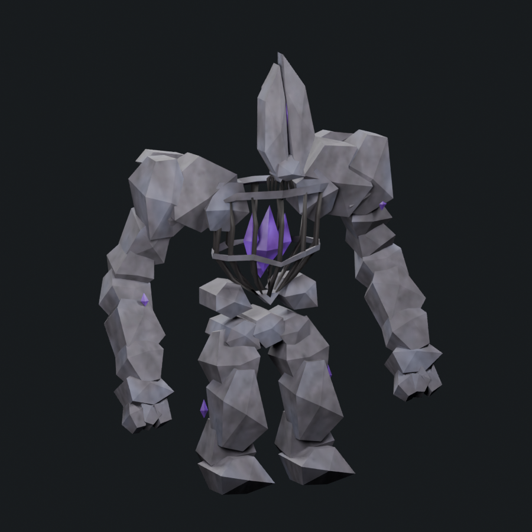
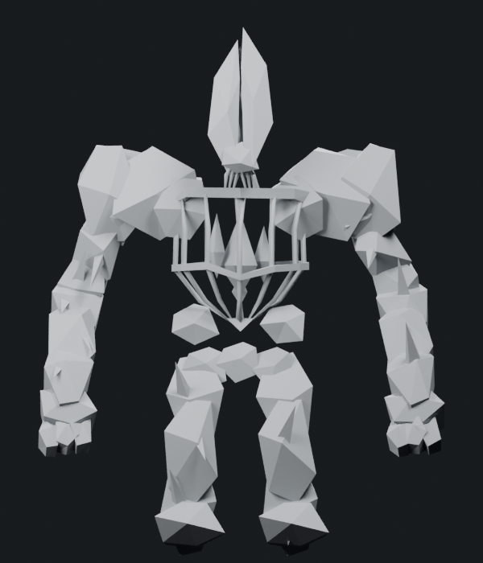
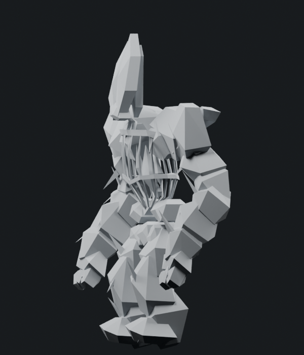

The arms and legs have deeper front/rear stone planes, staggered oblique face ridges and narrower splinter ends. Twelve new violet shards grow from their stone plates; four formerly floating shards now grow from the wrists and lower legs. Their complete basal sections are embedded into the stone and follow the same bone weights. Crystal bases were widened after the initial render read too much like thin spikes. Side inspection prompted turning their axes along the limb fractures to reduce forward projection.
1,800 triangles · Stone Golem donor 1,200 · 1.500× · cap 1,800. The six thin internal joint bindings were condensed from 120 to 48 triangles, funding 72 triangles of new crystals. This is a topology simplification, not a boolean union. Existing limb plate allocations remain unchanged. One mesh/material, four packed 512px maps, eight original bone identities and seven actions remain.






All 74 support groups pass rest plus 35 sampled action poses. The eight arm/digit closing sections pass 8,064 interior/edge checks; the sixteen crystal basal sections pass 14,112 checks across the same 36 poses, with zero measured outside distance. Both torso rings remain closed and connected. Side cameras retain the left-facing projection guard.
This remains an unaccepted refinement study. More irregular rock fragmentation and richer weathering remain to be developed against the concept. Native loading, full animation deformation and live performance remain pending. Adequately reworked boss tally remains 1/6.
Editable Blender model · Skinned export · Attack pose · Limb changes and budget · Mesh/export checks · Support checks · Arm/digit basal faces · Crystal basal faces · Crystal ownership and budget · Camera direction · Source provenance